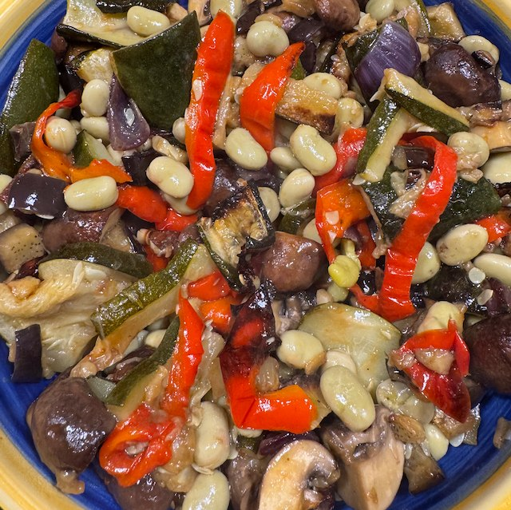

Broad Beans and Roasted Vegetables

Serves: 4
Cook Time: 1 hour
Adapted from Antonio Carluccio's Italian Feast
Ingredients
- 1 tin broad beans, drained
- 2 courgettes, sliced
- 1 aubergine, diced
- 1 red onion, wedged
- 1 red pepper, in strips
- 250g mushrooms, quartered
- Marinade
- 6 tbsp olive oil
- ½ garlic clove, mashed
- 1 tbsp parsley, finely chopped
- ½ lemon, juice
- salt
Method
Whisk the marinade ingredients together.
Prepared the veg (not the beans), and pour over the marinade and mix.
Cremate in oven on 200°C for 30-40 min.
Let cool a little, then mix in the broad beans and taste for salt.